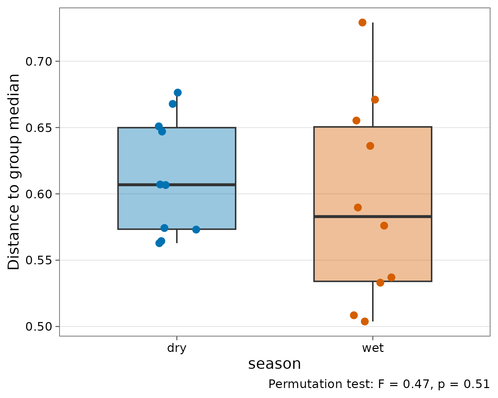

Testing community composition
Source:vignettes/articles/composition-tests.Rmd
composition-tests.RmdOrdination shows patterns in composition. This article covers how to test them, following the standard workflow (Borcard, Gillet and Legendre 2018):
- Does composition differ with site variables? (PERMANOVA)
- Is that result caused by groups differing in spread? (dispersion test)
- Which variables should enter the model? (forward selection)
- How much does each group of variables explain on its own? (variation partitioning)
- Which species characterise each group? (indicator species)
All results are tidy tibbles. The computations are done by vegan and indicspecies, and the test suite checks that the results are identical.
The concept
Composition is multivariate: a transect is described by the abundance of every species at once. Ordinary ANOVA tests one response; the tests here work on a dissimilarity matrix (by default Bray-Curtis, from 0 = identical species and abundances to 1 = no species shared), so they compare whole communities.
The logic is the same as ANOVA. The variation in composition is the sum of squared dissimilarities among samples; a variable “explains” the part of it that lies between its groups or along its gradient. Because dissimilarities are not normally distributed, significance comes from permutation: shuffle the samples among groups many times, recompute the statistic, and ask how often chance alone does as well as the real data. Permutations must respect the design (for example, shuffle only within a site when samples are paired), otherwise the test is too liberal.
The units are the 20 transects of the Mt Wilhelm ant survey: 5 elevations x 2 seasons x 2 transects.
1. PERMANOVA
beta_permanova(ants, site = unit, formula = ~ elevation + season)
#> # A tibble: 4 × 6
#> term df sum_sq r2 statistic p.value
#> <chr> <dbl> <dbl> <dbl> <dbl> <dbl>
#> 1 elevation 1 1.33 0.169 3.75 0.001
#> 2 season 1 0.526 0.0669 1.49 0.084
#> 3 Residual 17 6.01 0.765 NA NA
#> 4 Total 19 7.87 1 NA NAHow to read it. r2 is the share of the
total variation in composition explained by each term,
statistic is the pseudo-F (variation between groups
relative to within), and p.value comes from 999
permutations. Elevation explains about 17% and is highly significant;
season explains 7% and, tested this way, is not significant (P
= 0.10). The residual (77%) is variation among transects that neither
variable explains: normal for ant communities, which also respond to
microhabitat, nest sites and chance.
Each term is tested after the other (by = "margin", the
default), so the result does not depend on the order of terms in the
formula. Here the design is balanced, so sequential tests
(by = "terms", vegan’s default) give the same numbers; with
correlated terms they would not.
Elevation explains 17% of the variation in composition (Bray-Curtis). To test season while respecting the paired design, permute only within sites:
beta_permanova(ants, site = unit, formula = ~season, strata = site)
#> # A tibble: 3 × 6
#> term df sum_sq r2 statistic p.value
#> <chr> <dbl> <dbl> <dbl> <dbl> <dbl>
#> 1 season 1 0.526 0.0669 1.29 0.003
#> 2 Residual 18 7.34 0.933 NA NA
#> 3 Total 19 7.87 1 NA NAInterpretation. The season effect is the same size (r² = 0.067) but now significant. Nothing about the data changed, only the test: shuffling transects only within each site removes the large between-site differences from the comparison, so a small, consistent seasonal shift at every site becomes detectable. This is the multivariate equivalent of a paired test.
The season effect, hidden by the large differences between elevations, becomes clear once each transect is compared only with transects on its own site.
2. Homogeneity of dispersion
PERMANOVA can also give a significant result when groups differ in spread rather than in location (Anderson 2006). Check this:
disp <- beta_dispersion(ants, site = unit, group = season)
attr(disp, "test")
#> # A tibble: 2 × 5
#> term df sum_sq statistic p.value
#> <chr> <int> <dbl> <dbl> <dbl>
#> 1 Groups 1 0.00182 0.466 0.51
#> 2 Residuals 18 0.0702 NA NA
autoplot(disp)
The seasons have similar dispersion, so a season effect is a real shift in composition, not a difference in spread.
When dispersions do differ, or group sizes are unbalanced, use the Welch-type PERMANOVA W*d (Hamidi et al. 2019), which stays valid under unequal spread:
set.seed(1)
beta_welch(ants, site = unit, group = season)
#> # A tibble: 1 × 4
#> statistic n_groups n_sites p.value
#> <dbl> <int> <int> <dbl>
#> 1 1.29 2 20 0.231The Welch test does not use the site strata, so it should be compared with the unstratified PERMANOVA, which also found no season effect (P = 0.10). Both agree; the season effect is only visible within sites.
3. Forward selection
With many candidate variables, select them by forward selection with the double stopping rule of Blanchet et al. (2008). It stops before the model explains more than the full model, to avoid inflated Type I error and an overfitted model:
sel <- ord_select(ants, site = unit, formula = ~ elevation + season)
sel
#> # A tibble: 1 × 5
#> step term adj_r2 statistic p.value
#> <int> <chr> <dbl> <dbl> <dbl>
#> 1 1 elevation 0.101 3.13 0.001
attr(sel, "adj_r2_full")
#> [1] 0.1135565How to read it. Elevation enters first and alone. Season is not selected: adding it would not explain significantly more, and the selected model’s adjusted R² (0.101) is already close to that of the full model (0.114), the ceiling the stopping rule will not exceed.
4. Variation partitioning
How much do elevation and season explain on their own and together (adjusted R², Peres-Neto et al. 2006)?
ord_varpart(ants, site = unit, elevation = ~elevation, season = ~season)
#> # A tibble: 4 × 5
#> fraction label adj_r2 testable p.value
#> <chr> <chr> <dbl> <lgl> <dbl>
#> 1 [a] = X1|X2 elevation only 0.107 TRUE 0.001
#> 2 [b] = X2|X1 season only 0.0127 TRUE 0.158
#> 3 [c] shared elevation & season -0.00631 FALSE NA
#> 4 [d] = Residuals residual 0.886 FALSE NAHow to read it. Fraction [a] is
explained by elevation alone (about 11%), [b] by season
alone (about 1%, not significant), [c] by both together,
and [d] is unexplained. Adjusted R² corrects for the number
of variables, so fractions are comparable between groups of different
size. A small negative value, as for [c] here, means zero:
the two variables are independent by design (every elevation was sampled
in both seasons), so they share no explained variation. Large shared
fractions are common in observational data, where for example climate
and space are correlated; then the effect cannot be attributed to
either.
Up to four groups of variables are allowed, for example climate,
soil, space (from elevation or coordinates) and time.
5. Indicator species
Which species characterise lowland and montane transects (IndVal, De
Caceres et al. 2010)? A is specificity, the probability
that a site holding the species belongs to the group; B is
fidelity, the proportion of the group’s sites holding the species.
Because every species is tested, the p-values are corrected for multiple
testing (Holm by default, column p.adj) before species are
selected; use adjust = "fdr" for a less strict false
discovery rate.
set.seed(1)
beta_indicator(ants, site = unit, group = zone)
#> # A tibble: 0 × 7
#> # ℹ 7 variables: species <chr>, group <chr>, stat <dbl>, A <dbl>, B <dbl>,
#> # p.value <dbl>, p.adj <dbl>No species is a reliable indicator once the p-values are corrected.
The uncorrected ranking shows why: of the 79 species tested, only a few
reach p.value < 0.05, about as many as expected by
chance alone.
set.seed(1)
beta_indicator(ants, site = unit, group = zone, adjust = "none", alpha = 1) |>
dplyr::arrange(p.value) |>
head()
#> # A tibble: 6 × 7
#> species group stat A B p.value p.adj
#> <chr> <chr> <dbl> <dbl> <dbl> <dbl> <dbl>
#> 1 mono_002 lowland 0.761 0.927 0.625 0.012 0.012
#> 2 rhyt_001 lowland 0.707 1 0.5 0.021 0.021
#> 3 oeco_001 lowland 0.612 1 0.375 0.047 0.047
#> 4 phei_003 lowland 0.612 1 0.375 0.052 0.052
#> 5 para_005 lowland 0.612 1 0.375 0.059 0.059
#> 6 tetr_018 lowland 0.612 1 0.375 0.061 0.061How to report it
Differences in ant composition (Bray-Curtis dissimilarity) between elevations and seasons were tested by PERMANOVA (Anderson 2001) with 999 permutations in tidydiversity. Elevation explained 17% of the variation (pseudo-F = 3.75, P = 0.001). Season explained 7%; it was significant when permutations were restricted within sites (pseudo-F = 1.29, P = 0.003), but not otherwise. Multivariate dispersion did not differ between seasons (PERMDISP, P = 0.50), so the season effect reflects a shift in composition rather than in spread. Variation partitioning (adjusted R²) attributed 11% of the variation to elevation alone and 1% to season alone.
Always state the dissimilarity, the number of permutations, how they were restricted, and the dispersion test.
References
Anderson, M. J. (2001). A new method for non-parametric multivariate analysis of variance. Austral Ecology, 26, 32-46.
Anderson, M. J. (2006). Distance-based tests for homogeneity of multivariate dispersions. Biometrics, 62, 245-253.
Blanchet, F. G., Legendre, P. and Borcard, D. (2008). Forward selection of explanatory variables. Ecology, 89, 2623-2632.
Borcard, D., Gillet, F. and Legendre, P. (2018). Numerical Ecology with R, 2nd edn. Springer.
De Caceres, M., Legendre, P. and Moretti, M. (2010). Improving indicator species analysis by combining groups of sites. Oikos, 119, 1674-1684.
Hamidi, B. et al. (2019). Wd-test: robust distance-based multivariate analysis of variance. Microbiome*, 7, 51.
Legendre, P. and Legendre, L. (2012). Numerical Ecology, 3rd English edn. Elsevier.
Peres-Neto, P. R. et al. (2006). Variation partitioning of species data matrices: estimation and comparison of fractions. Ecology, 87, 2614-2625.